Pulsa tus AirPods para silenciar
Durante cualquier llamada, pulsa la varilla una vez para silenciar y otra para activar. Funciona incluso en Chrome, donde Google Meet y otras llamadas web ignoran la pulsación de los auriculares.
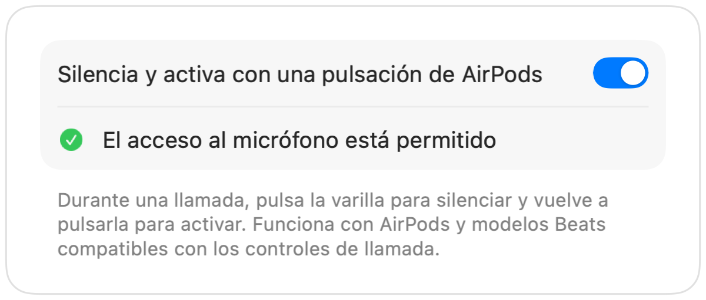
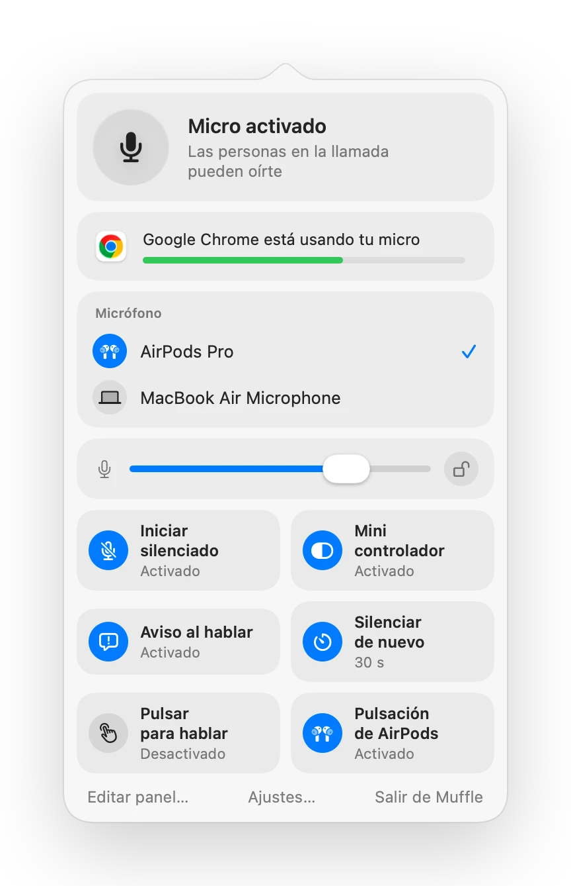
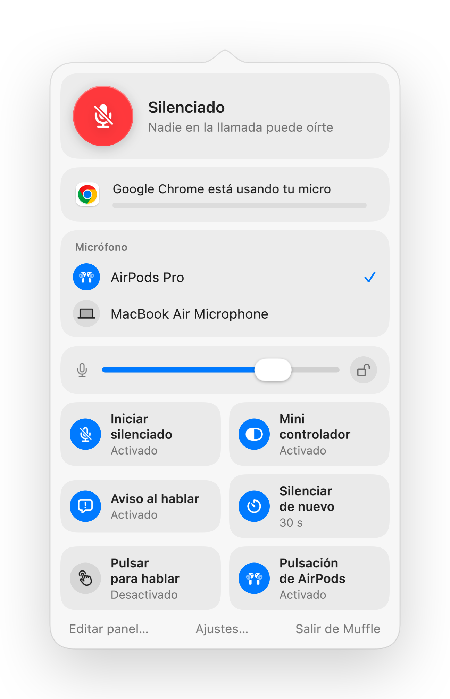
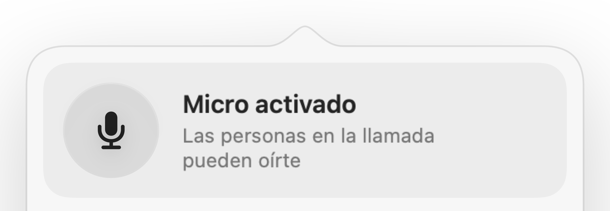
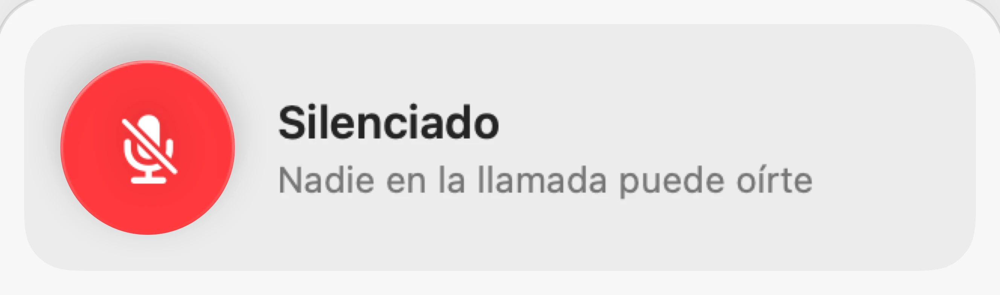
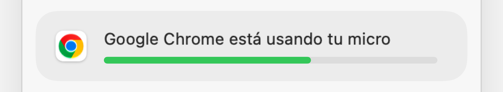
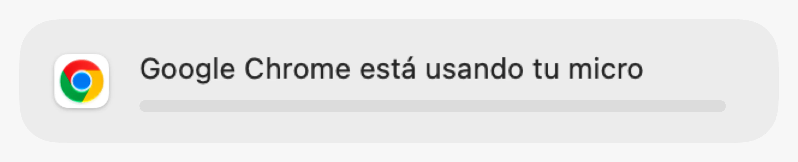
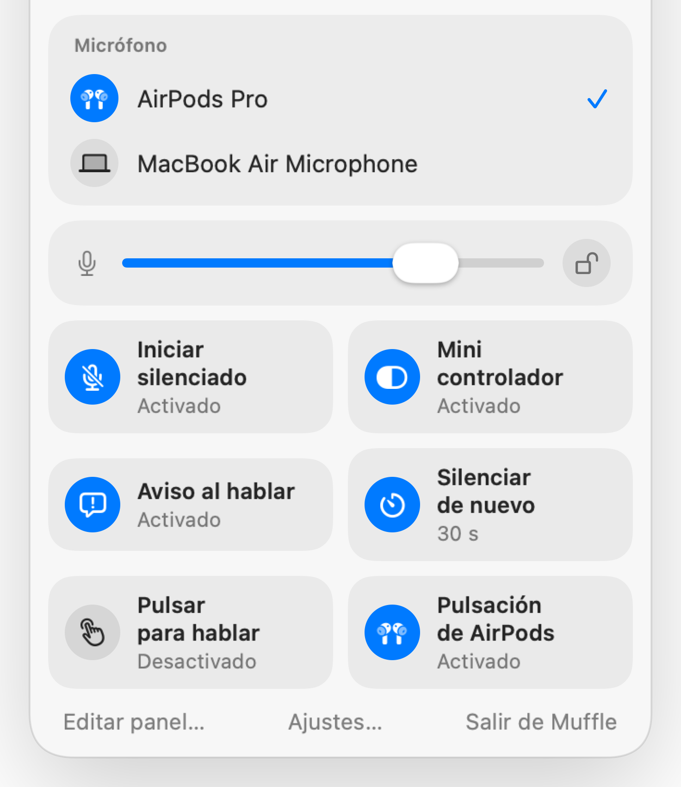
Muffle para Mac
Pulsa tus AirPods o un atajo de teclado. Muffle desactiva el micrófono directamente, para que Google Meet, Zoom, Teams, Slack y cualquier otra app solo reciban silencio.
Prueba gratis 3 días. Luego pago único, sin suscripción. Para macOS 14 Sonoma y posterior.
Haz clic en el botón, pulsa tus AirPods o usa un atajo. Muffle desactiva el propio micrófono para que todas las apps solo oigan silencio.
Silencia, elige tu micro, bloquea su nivel y activa o desactiva funciones directamente desde la barra de menús.
Todos los micrófonos de tu Mac están ahí mismo. Elige uno y todas las apps lo usarán.
Chrome, Zoom y Teams cambian el nivel del micrófono por su cuenta. Bloquéalo y Muffle lo restablece.
Activa o desactiva funciones directamente desde el panel y elige cuáles tener a mano.
La mayoría de botones para silenciar solo silencian una app. Muffle desactiva el propio micrófono, así que todas las apps de tu Mac oyen silencio.
Elige un icono para la barra de menús: estándar, verde y rojo o solo un punto. Muffle puede iniciarse con tu Mac.
Inicia todas las llamadas silenciado, activa el micro al terminar, silencia al bloquear tu Mac o si se desconectan los auriculares.
Toca para alternar, mantén pulsado para hablar o para silenciar. Añade teclas independientes para silenciar y activar, o una tecla para hablar como ⌥ derecha.
Elige qué muestra el panel de la barra de menús y qué controles rápidos aparecen en la parte inferior.
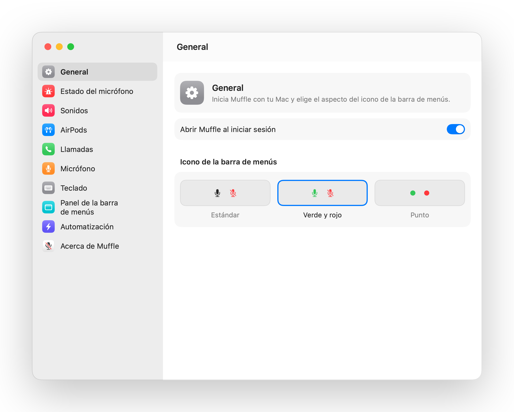
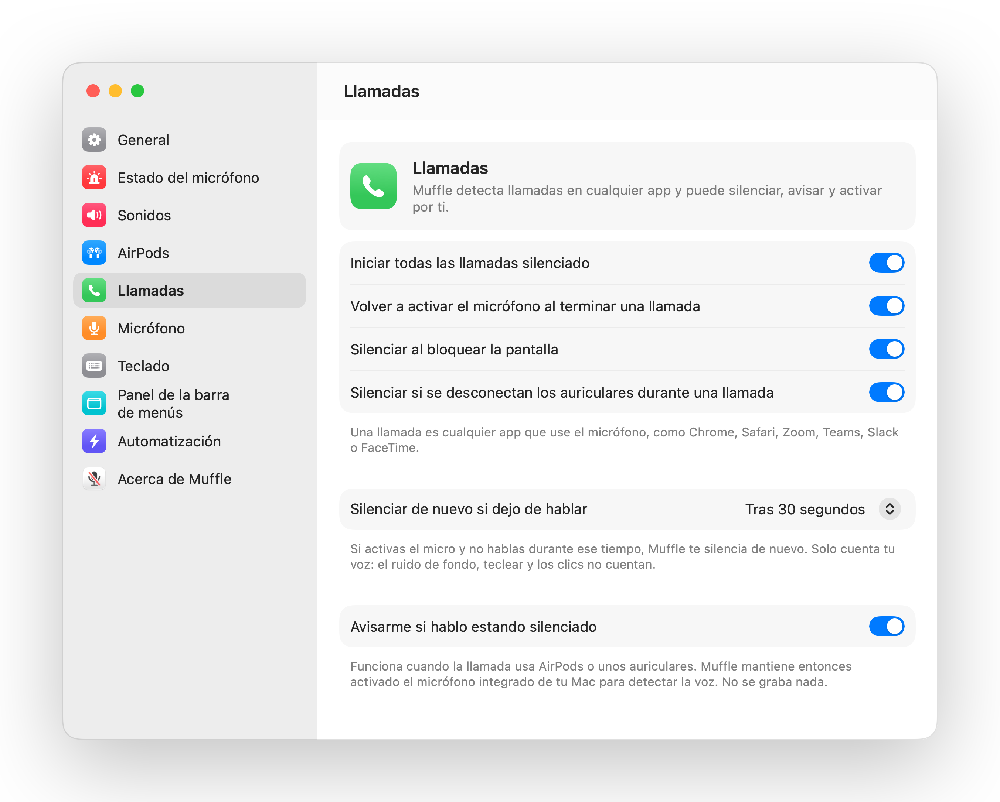
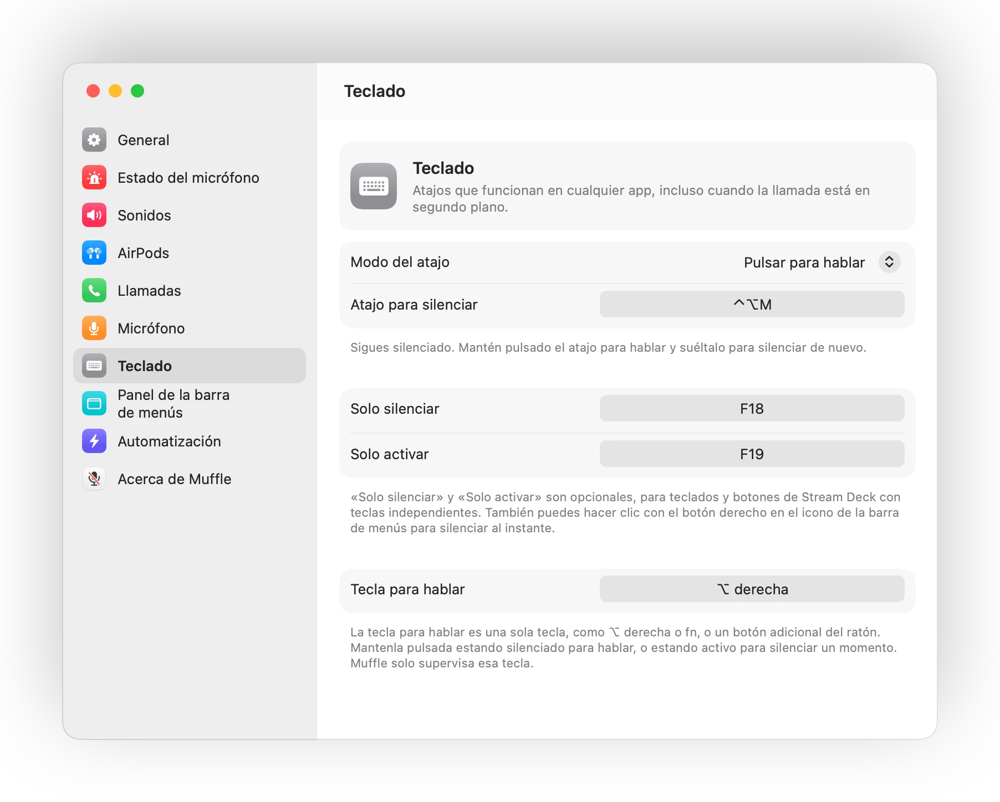
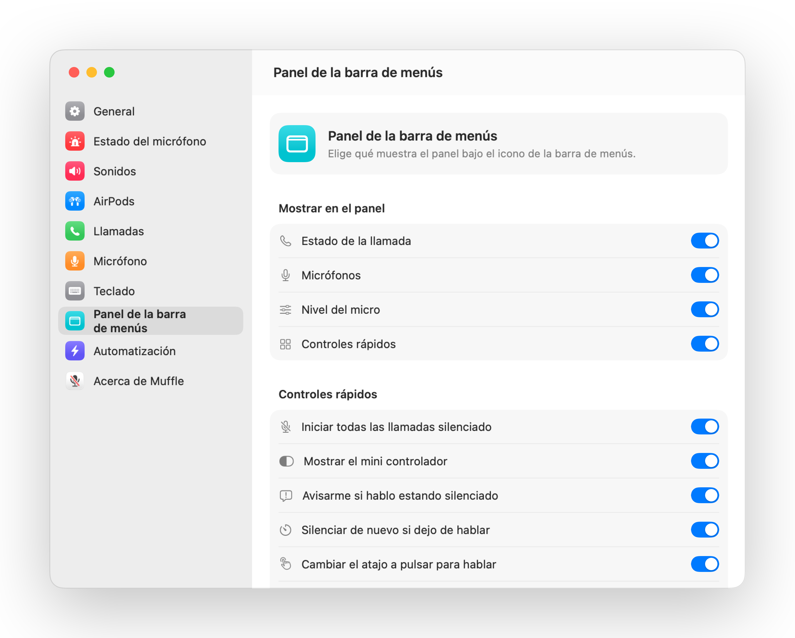
Durante cualquier llamada, pulsa la varilla una vez para silenciar y otra para activar. Funciona incluso en Chrome, donde Google Meet y otras llamadas web ignoran la pulsación de los auriculares.

Si empiezas a hablar estando silenciado, Muffle te avisa antes de que expliques toda tu idea a nadie.
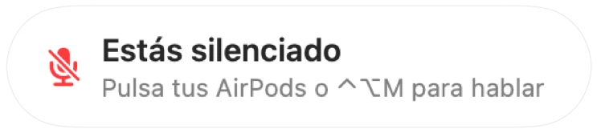
Control-Opción-M te silencia en todas partes, incluso con la reunión en una pestaña en segundo plano. Mantenlo pulsado para hablar y suéltalo para silenciar de nuevo.
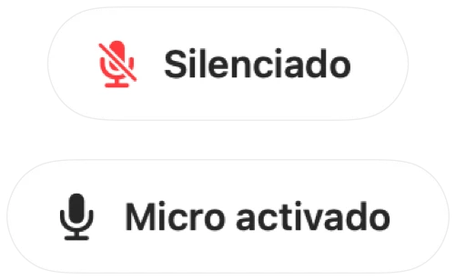
Chrome, Zoom y Teams modifican el volumen de tu micrófono por su cuenta. Bloquéalo y Muffle lo restablece al instante.

Un pequeño botón flotante muestra el estado del micrófono durante las llamadas. Haz clic para silenciar o activar.

Elige cómo funciona tu atajo: tocar para alternar, mantener para hablar o mantener pulsado para silenciar al toser. Añade teclas distintas para silenciar y activar, o mantén pulsada una sola tecla como ⌥ derecha o un botón extra del ratón.

¿Has activado el micrófono para decir algo? Si después no hablas durante el tiempo que elijas, Muffle te silencia de nuevo. Solo cuenta tu voz, no teclear ni el ruido de fondo.
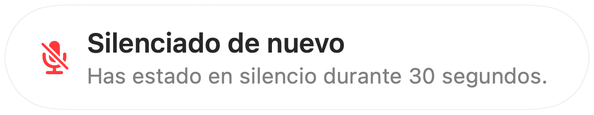
Con AirPods en una habitación silenciosa, Muffle sugiere el micro de tu Mac para que los AirPods reproduzcan la llamada con la máxima calidad. Si hay ruido, sugiere el micro de los AirPods.
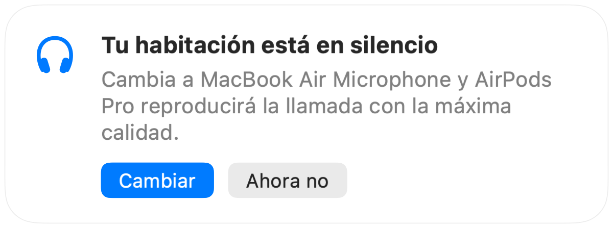
Inicia todas las llamadas silenciado, vuelve a activar el micro al terminar la conferencia y silencia cada vez que bloquees tu Mac.
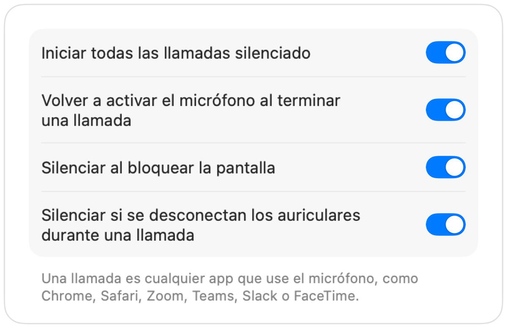
Si tus auriculares se desconectan a mitad de reunión, Muffle silencia antes de que la llamada pase al micro integrado del Mac y emita todo el sonido de la sala.
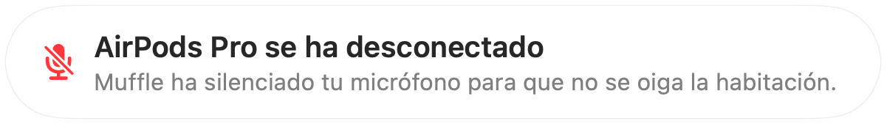
Silencia desde la app Atajos, Siri, Stream Deck, Raycast o con un botón en el Centro de control.
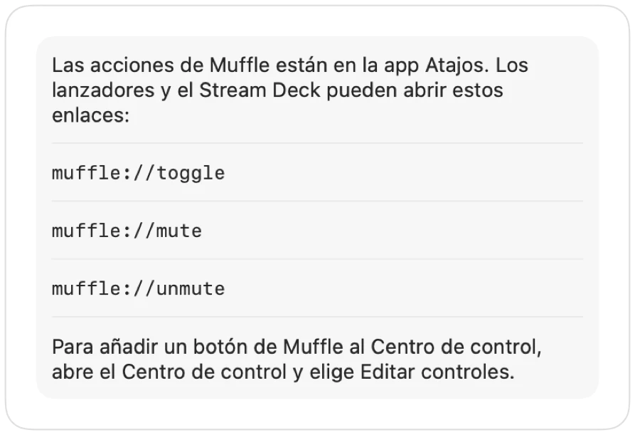
Un brillo verde o rojo alrededor de la pantalla, un icono en color en la barra de menús, un botón flotante y un sonido que puedes desactivar para cada micro. Activa los que prefieras.
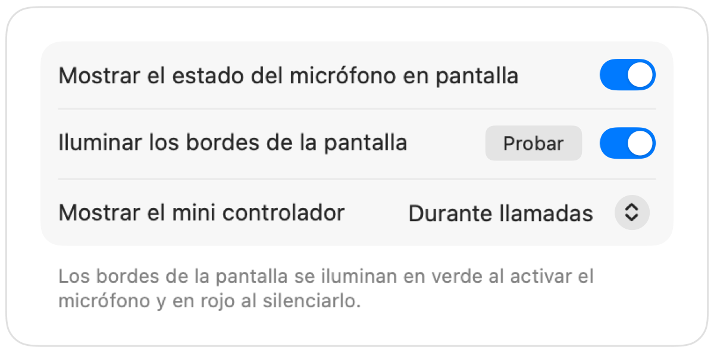
Muffle nunca graba, guarda ni envía audio. Solo activa y desactiva tu micrófono y lee su nivel de volumen. La app no tiene cuentas, analíticas ni seguimiento.
Instala Muffle desde Mac App Store y permite el acceso al micrófono.
Entra en una videollamada o reunión en cualquier app, como siempre.
Pulsa tus AirPods, pulsa Control-Opción-M o haz clic en el icono de la barra de menús para silenciar.
Sí. Chrome no pasa la pulsación de silenciar de los AirPods a las llamadas web, así que Muffle la intercepta y silencia el micrófono directamente. Lo mismo ocurre con cualquier llamada en una pestaña del navegador.
Es posible que la app de tu llamada muestre tu micro como activado, porque Muffle apaga el micrófono en lugar de pulsar el botón de la app. Los demás escucharán silencio en cualquier caso. El icono de Muffle en la barra de menús se pone rojo cuando estás silenciado.
AirPods Pro, AirPods de 3.ª generación o posterior y AirPods Max, además de los modelos Beats compatibles con controles de llamada. El atajo de teclado y la barra de menús funcionan con cualquier micrófono.
Sí. Muffle funciona con cualquier app de tu Mac que use el micrófono, tanto aplicaciones de escritorio como llamadas en el navegador web.
No. Prueba todas las funciones gratis durante 3 días y luego desbloquea Muffle con una compra única.
macOS solo transmite la pulsación de los AirPods a las apps que están usando el micrófono, así que Muffle mantiene abierta una conexión silenciosa durante las llamadas. No se graba absolutamente nada.
Muffle vuelve a activar el micrófono al cerrarse, para que nunca te quedes sin voz sin darte cuenta.
macOS 14 Sonoma y posterior. El botón del Centro de control requiere macOS 26 o posterior.
Sí. Elige «Pulsar para hablar» en Ajustes y mantén pulsado tu atajo para hablar. También puedes mantener pulsada una sola tecla como ⌥ derecha o fn, o un botón adicional del ratón.
Cuando una llamada usa el micro de los AirPods, estos cambian al modo de llamada, que reproduce el sonido con menor calidad. En una habitación silenciosa, Muffle sugiere usar el micro de tu Mac para que los AirPods sigan reproduciendo con la máxima calidad.
No. Muffle reconoce la voz con el análisis de sonido en el dispositivo de Apple, así que solo cuenta cuando hablas. Teclear, los clics y el ruido de fondo no cuentan, y no se graba nada.
Respuestas directas y prácticas para silenciar tu micrófono en el Mac en cualquier app.
Prueba Muffle gratis durante 3 días.